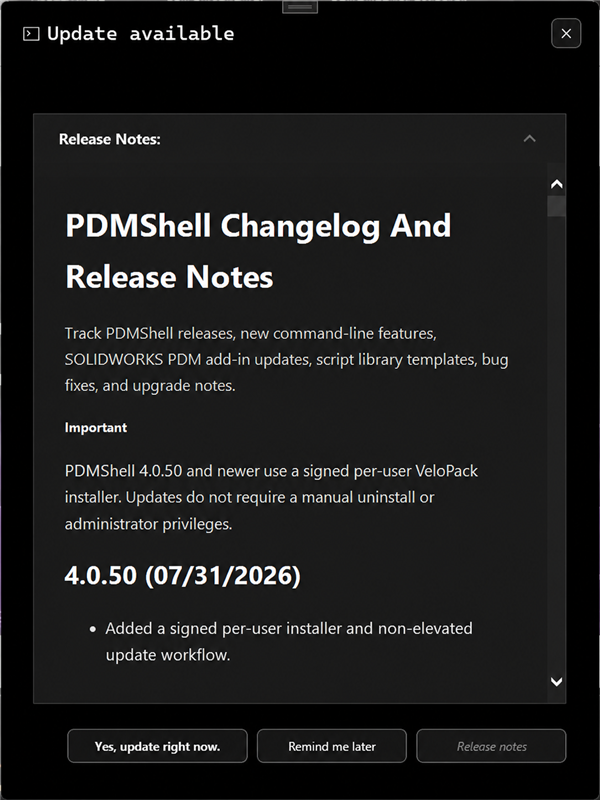
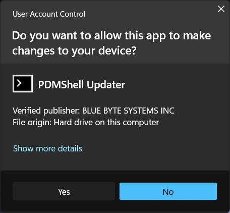
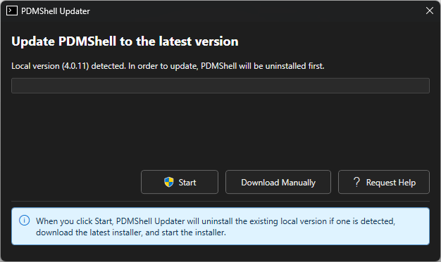
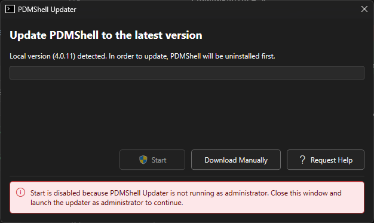
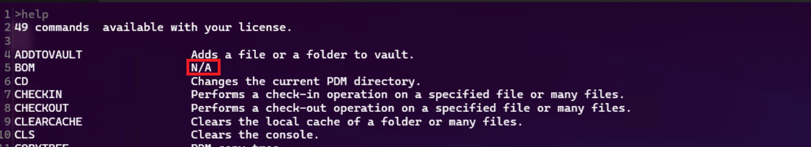

How to Install/Update PDMShell
PDMShell can be installed from the Blue Byte Systems server or from the Microsoft Store. The Blue Byte Systems server installer is recommended because it provides the latest PDMShell version.
Note
The in-app updater is available in PDMShell 4.0.14 and newer.
Install From The Blue Byte Systems Server
Download the latest PDMShell installer from the Blue Byte Systems server:
If your browser warns that the installer is unverified, choose Download Anyway or Keep to continue.

If Chrome completely blocks the download before it finishes, you can temporarily lower Safe Browsing:
- Open Chrome.
- Select the three dots menu in the top-right corner.
- Go to
Settings>Privacy and security>Security. - Under
Safe Browsing, temporarily selectNo protection (not recommended). - Try the PDMShell download again.
- After the download completes, turn Safe Browsing back on.
After downloading, double-click the installer and follow the on-screen instructions. You may need administrator privileges to install PDMShell.
Install From The Microsoft Store
- Open the Microsoft Store on your Windows device.
- Search for PDMShell.
- Select the PDMShell app from the search results.
- Select
GetorInstall. - Wait for the installation to complete.
- Launch PDMShell from the Start menu.
The Microsoft Store does not automatically update PDMShell. If you installed PDMShell from the Microsoft Store, you may need to uninstall it and reinstall the latest version manually.
Update From Inside PDMShell
PDMShell 4.0.14 and newer can show an Update available dialog when a newer version is detected. The dialog shows the release notes for the latest version.

Select Yes, update right now to launch PDMShell Updater. Windows may show a User Account Control prompt because the updater needs administrator privileges to uninstall and install software.

When PDMShell Updater is running as administrator, the Start button is enabled. The updater also shows the local PDMShell version when an installed version is detected.

Selecting Start will:
- Uninstall the existing local PDMShell version if one is detected.
- Download the latest PDMShell installer.
- Start the installer.
Use Download Manually if you prefer to download the installer yourself. Use Request Help to open this updater help section.
Run The Updater As Administrator
PDMShell Updater must run as administrator before it can uninstall or install PDMShell. If the updater is not running as administrator, Start is disabled and the updater shows a red alert explaining the issue.
Close the updater and launch it as administrator to continue.

Fix Update Problems
After an update, new commands may appear as N/A in the help command if PDMShell is still loading files from the previous installation. Uninstall PDMShell and reinstall the latest version to refresh the command resources.

System Requirements
To ensure PDMShell runs smoothly, your system must meet the following requirements:
- Operating System: Windows 10/11
- SOLIDWORKS PDM Professional: Version 2014 or newer
- SOLIDWORKS desktop application: Version 2017 or newer for commands that use SOLIDWORKS
Support
For further assistance, visit our Support Page or contact us at support@bluebytesystemsinc.zohodesk.com.